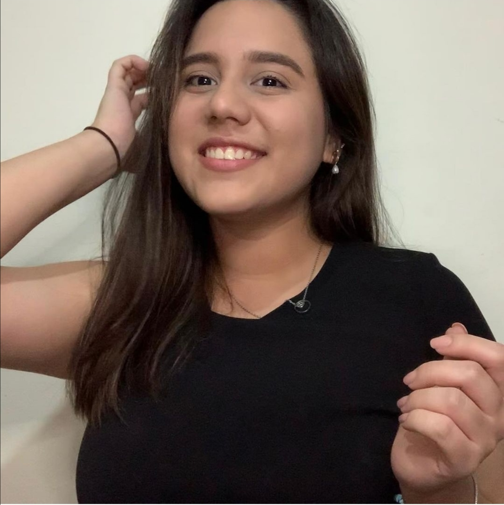

Valeria María Orellana Rodas

Descripción personal
Mi nombre es Valeria Orellana. Estudio en la Escuela Superior de Economía y Negocios, y actualmente estoy cursando mi tercer año de la carrera Ingeniería de Negocios.
Soy una persona empática, creativa, alegre y responsable. Me considero una persona que siempre le pone mucha pasión y dedicación a todo lo que hace.

William Pineda - Master Trainer en Teleperformance
"Valeria es una muy buena trabajadora.; siempre dispuesta a aprender y colaborar, para que cualquier tarea sea llevada a cabo de la mejor manera. Resaltó su capacidad de trabajo en equipo, entendimiento, y responsabilidad con cada una de sus tareas."

Alejandro Alas - CEO de A&S Analytics S. A. de C. V.
“Valeria es una profesional responsable, comprometida con su trabajo y con muy buenas habilidades sociales.”

Sergio López - Digital Growth Analyst en Tigo
"En mi experiencia laboral con Valeria Orellana, considero que es una compañera de trabajo muy disciplinada y aplicada. Asimismo, es muy sociable y está dispuesta a ayudar al resto del equipo.